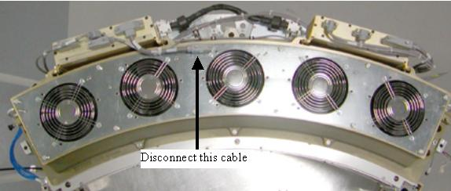

Operating Documentation
Direction 5193574-800, Rev# 22
LightSpeed 7.X Service Methods
Module Version 3.0, Version Date 6/12/15
Operating Documentation |
| Required Persons | Preliminary Reqs | Procedure | Finalization |
|---|---|---|---|
| 1 | NA | 60 mins | As Required |
This procedure defines the information necessary to properly remove and replace a fan or fan plate assembly. Individual fans may or may not be spare part.
| Last Revised: | June 12, 2015 |
| Item | Qty | Effectivity | Part# | Manufacturer | |
|---|---|---|---|---|---|
| Torque wrench kit 5135228 or equivalent | 1 | - | - | - | |
| 5 mm Hex wrench | - | - | - | ||
| HEPA vacuum (Field Supplied) | 1 | - | - | - | |
| Item | Qty | Effectivity | Part# | Manufacturer | |
|---|---|---|---|---|---|
| Fan Plate assm | 1 | - | 5120610 | - | |
Remove the Gantry Right side cover.
Stop the rotor of X-ray tube in case of Liquid Bearing Tube before HVDC off. Refer to Liquid Bearing Tube Rotor stop procedure for details.
| ||||
| CRUSH HAZARD. | ||||
| UNEXPECTED GANTRY ROTATION CAN CAUSE SERIOUS INJURY. | ||||
| Never service the gantry with the axial drive enabled. Use the gantry rotation lock to lock out gantry rotation. See safety menu of Service Document gui for appropriate procedures. |
Disable Axial Drive and HVDC service switches on the service switch panel.
Position the DAS/Detector at 12 o’clock and lock gantry rotation.
Shut down power to the rotating assembly using the Service Switch panel 120 VAC service switch. See Illustration 1.
Illustration 1: Service Switch Panel

Remove gantry left side, top and front covers.
Refer to Replacement → Gantry → Enclosure → (Cover Removal Procedures).
Disconnect the fan control cable from the fan plate and loosen captive screws holding the fan plate to the Air plenum. See Illustration 2 for VCT Plenum front view. See Illustration 3 for 2006 style Plenum changes. Remove the single cable connection on the fan plate for the 2006 style Plenum.
Illustration 2: VCT Detector Plenum

Illustration 3: VCT Plenum 2006 Style Changes

Lift off the fan plate. The entire plate or individual fan can now be replaced.
If replacing a single fan, Install new fan onto the plate and torque nuts to:
| 2.9 N-m | 2.1 lb-ft | 25.7 lb-in | 29.6 Kg-cm |
Install the fan plate assembly. There are guide pins on each end of the plenum casting.
| NOTE: | Be careful not to pinch wires or harnesses between the fan plate and the air plenum casting. |
Torque fan plate screws to:
| 8 N-m | 5.8 lb-ft | 70 lb-in | 80 Kg-cm |
Reconnect fan control cable.
Turn on the 120 VAC service switch at the service switch panel. Check to make sure all 5 fans are running. Use a piece of paper or similar object to make sure fans are pulling air into the plenum. A fan that is not running will still have the fan blades moving as air is pushed back out of the plenum through that fan port.
Turn off the 120 VAC service switch, release the gantry rotational lock and install gantry covers, all except the right side cover.
Refer to Replacement → Gantry → Enclosure → (Cover Removal Procedures).
Turn on the 120 VAC, HVDC and Axial drive service switches.
Install gantry right side cover.
If any calibrations were run with a fan not working (Fastcal or Detailed Calibration), those calibrations will need to be run after repair is complete.
Perform the Quality Assurance Test.
Perform a [Save State] operation if Detailed Calibrations were performed.